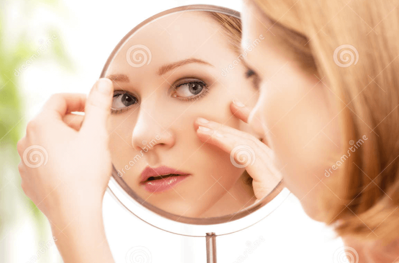
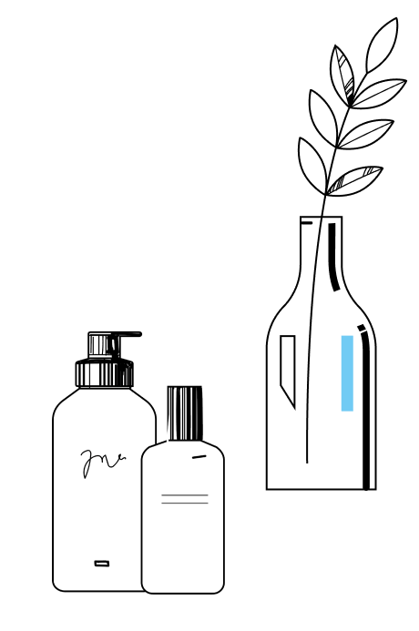

Уход за кожей зимой: советы косметолога

22.01.2023

1 057

4 мин
Содержание
Зима — тяжелое время для кожи, когда она подвергается сразу нескольким раздражающим факторам: перепадам температур, сухости, ветру. Поэтому в холодное время года она нуждается в дополнительной заботе и бережном отношении.
Один из главных врагов для кожи зимой — это сухость. Это состояние провоцируется началом отопительного сезона. Наверняка вы замечали, когда включается центральное отопление, влажность воздуха в помещении ощутимо сокращается, что приводит к сухости.
В таких условиях нарушаются барьерные функции кожи1, она становится чувствительной, усиливается шелушение, появляются микротрещинки. В конечном счете все это вызывает дискомфорт. Вы только пришли на работу, а уже испытываете стянутость и хочется смыть макияж.
Чтобы такого не было, воспользуйтесь нашими советами по уходу за кожей зимой.
Как кожа лица реагирует на холод

Основными сигналами на зимние раздражители могут быть покраснения, шелушения, высыпания. Эти симптомы могут сопровождаться зудом и покалыванием. Рассмотрим подробнее некоторые кожные реакции.
● Аллергия. Ответная реакция кожи на мороз. Проявляется в виде покраснения, ощущаются жжение и дискомфорт.
● Купероз. Заболевание, которое вызвано нарушением
циркуляции крови и работы сосудов. Холод, ветер в сочетании
с индивидуальными особенностями могут спровоцировать
болезнь.
● Воспаления. Зимой есть большой соблазн пользоваться
жирными кремами. Если перестараться, то можно
спровоцировать воспаление.
● Тусклый цвет лица. Те, кто не любит зимние прогулки,
испытывают нехватку кислорода и витаминов. Это отражается
на коже в виде изменившегося цвета лица.
● Шелушение и обветренность. Важно поддерживать
оптимальный водный баланс. Уменьшение потребления воды в
сочетании с холодом и ветром приводит к сухости и
шелушению.
● Трещины на губах и руках. Не стоит забывать об уходе за
кожей рук зимой. Она больше всего подвержена негативному
влиянию зимы.
Что искать в составе косметики

Базовый уход за кожей лица зимой подразумевает несколько составляющих: очищение, отшелушивание, тонизирование, увлажнение, питание и защиту. Вот несколько советов, которые помогут с выбором уходовых средств. Если ваша кожа склонна к воспалениям, пользуйтесь специальной щадящей косметикой, в состав которой входят витамины С, РР, К.
Очищение
Очищать кожу лучше всего с помощью косметики, в составе которой содержатся витамины и натуральные масла2. Такие средства щадят кожу и восстанавливают ее барьерную функцию.
Отшелушивание
Используйте мягкие отшелушивающие средства. У мягких продуктов уровень рН примерно такой же, как и у кожи: 5–5,5. На период холодов откажитесь от использования скрабов с абразивными частицами. Лучше отдать предпочтение использованию гоммажа.
Тонизирование
Не используйте спиртовые средства, выбирайте мягкую продукцию, даже если кажется, что кожа жирнее, чем обычно. Ощущение стянутости снимает термальная вода.
Увлажнение
Используйте косметику с натуральным увлажняющим фактором (NMF — Natural Moisturizing Factor) — это комбинация компонентов для глубокого увлажнения. Она проникает вглубь и позволяет надолго сохранить эффект увлажненности. В состав NMF входят свободные аминокислоты, мочевина, минералы (кальций, магний, натрий), лактаты.
Питание
В составе питательных косметических средств должны быть такие ингредиенты, как растительные масла, жирные кислоты, пантенол, витамины и антиоксиданты. Важно избегать в составе парафинов, минеральных масел и вазелина, потому что эти компоненты покрывают лицо пленкой, делая ее жирнее.
Как заботиться о коже лица зимой
Когда принимаете душ, особенно после прогулки на морозе, выбирайте теплую воду в сочетании с адекватными уходовыми процедурами. Эта рекомендация относится в том числе и к умыванию. Слишком горячая вода разрушает барьерную функцию.
Мы привыкли кутаться в шерстяные шарфы на холоде, но лучше выбрать более щадящие материалы: хлопчатобумажные или синтетические ткани мембранного типа. Они дышащие и не раздражают кожу.
Косметологи советуют с наступлением холодов уделять больше внимания защите своей кожи. Наносите защитный крем приблизительно за 30 минут до выхода из дома. Используйте соответствующую косметику при склонности к воспалениям.
Дома и в офисе пользуйтесь увлажнителями, это полезно не только для кожи, но и для слизистых и в целом улучшает самочувствие.
Старайтесь хоть сколько-нибудь времени проводить на улице. Зимой действительно не хочется лишний раз никуда выходить, но насыщение кислородом необходимо для здоровья.
Литература:
- Тымчишина М.В., Королева М.А. Чувствительная кожа: разнообразие клинических проявлений и способы коррекции // Клиническая дерматология и венерология. – 2020.
- Эрнандес Е.И., Юцковская Я.А. НОВАЯ КОСМЕТОЛОГИЯ. Основы современной косметологии. 2-е издание. М.: ООО ИД «Косметика и медицина», 2019.